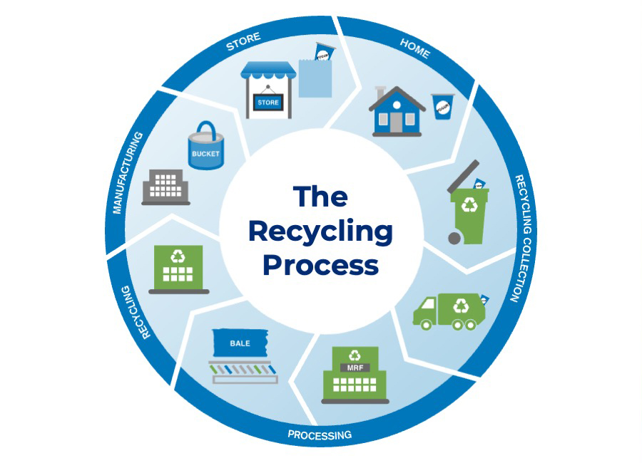

What is Recycling?
Recycling is the process of collecting, sorting, and processing waste materials such as paper, plastic, glass, and metal to convert them into new usable products. It prevents waste, reduces the consumption of fresh raw materials, lowers energy usage, and reduces pollution.
Recycling is a critical component of waste reduction and involves several key steps: collection, sorting, cleaning and processing, manufacturing, and purchasing recycled products.
The Process Of Recycling

Recycling helps reduce pollution, saves natural resources, and creates jobs. By recycling, we protect the environment and build a sustainable future.
Importance of Recycling
Recycling is crucial for several reasons:
- Conservation of Resources: It reduces the need to extract and process raw materials, helping to conserve natural resources like timber, water, and minerals.
- Energy Savings: Producing goods from recycled materials requires significantly less energy compared to manufacturing from virgin materials.
- Reduction of Landfill Waste: Recycling helps divert waste from landfills, which are rapidly filling up.
- Mitigation of Pollution: It reduces the demand for processes that lead to air and water pollution.
- Economic Benefits: The recycling industry creates jobs and contributes to local and global economies.
In summary, recycling plays a vital role in waste management and environmental conservation, making it an essential practice for sustainable living.